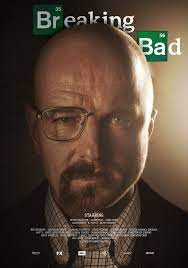
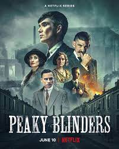
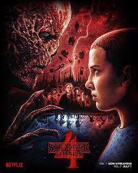

-

Breaking Bad
Calificación: 9.5
Fecha de Estreno: 20/01/2008
Duración: 5 temporadas
Género: Drama, Crimen
Sinopsis: El profesor calmado de química de una secundaria, Walter White cree que su vida no puede ser peor. Su salario apenas le alcanza para sostener a su familia, una situación que no mejora cuando su esposa da a luz y su hijo adolescente sufre de parálisis cerebral, pero Walter queda anonadado cuando se entera que tiene un cáncer terminal. Al concluir que su enfermedad iba a arruinar financieramente a su familia, él toma una decisión desesperada con el fin de ganar más dinero durante el tiempo que le queda y transforma un viejo vehículo de recreación en un laboratorio de matanfetaminas sobre ruedas.
-

Dark
Calificación: 9.5
Fecha de Estreno: 01/12/2017
Duración: 3 temporadas
Género: Drama, Ciencia ficcion
Sinopsis: La desaparición de dos niños muestra los vínculos entre cuatro familias y expone el pasado de una pequeña ciudad.
-

Peaky Blinders
Calificación: 9.5
Fecha de Estreno: 12/09/2013
Duración: 6 temporadas
Género: Drama, Crimen
Sinopsis: Gran Bretaña vive la posguerra. Los soldados regresan, se acuñan nuevas revoluciones y nacen bandas criminales en una nación agitada. En Birmingham, una pandilla de gánsters callejeros asciende hasta convertirse en los reyes de la clase obrera.
-
Outer Banks
Calificación: 5.5
Fecha de Estreno: 15/04/2020
Duración: 3 temporadas
Género: Drama
Sinopsis: Un adolescente recluta a sus tres mejores amigos para buscar un tesoro legendario relacionado con la desaparición de su padre.
-

Stranger Things
Calificación: 7.5
Fecha de Estreno: 15/07/2016
Duración: 4 temporadas
Género: Drama
Sinopsis: Cuando un niño desaparece, sus amigos, la familia y la policía se ven envueltos en una serie de eventos misteriosos al tratar de encontrarlo. Su ausencia coincide con el avistamiento de una criatura terrorífica y la aparición de una extraña niña.
-

The Blacklist
Calificación: 8.5
Fecha de Estreno: 23/09/2013
Duración: 10 temporadas
Género: Drama
Sinopsis: Cuando el exagente de gobierno y fugitivo Raymond "Red" Reddington se entrega al FBI, les hace una oferta que no podrán rechazar. Bajo la misteriosa condición de que sólo trabajará con la reciente graduada de Quantico, Elizabeth Keen, éste se compromete a ayudar a capturar criminales de una lista que él creó, la cual incluye a políticos, mafiosos, espías y terroristas internacionales -empezando por el terrorista, creído muerto, Ranko Zamani-. Mientras los dos persiguen a su presa, Red obliga a su aprendiz a pensar como un criminal para visualizar la situación en su totalidad.
-

Pablo Escobar: El Patron del Mal
Calificación: 7.5
Fecha de Estreno: 28/05/2012
Duración: 1 temporadas
Género: Drama
Sinopsis:Una dramatización de la vida del narcotraficante más temido en la historia de Colombia, Pablo Escobar Gaviria, un hombre cruel, indolente y despiadado, quien sembró el terror en la población colombiana por medio de la violencia y los asesinatos a sus enemigos y a los civiles inocentes. Su poder no tuvo límite y el recuento de su vida en esta serie, la cual ha alcanzado fama mundial, revive el dolor y el drama experimentado por casi todos los colombianos que presenciaron sus actos villanos. El programa se inicia desde el comienzo de su carrera delictiva como traficante y ladrón de automóviles, luego muestra su carrera política; sus conexiones con personas ilustres y con la delincuencia común y sus tratos ilícitos también se reflejan en el programa.
-

The Last Dance
Calificación: 6.5
Fecha de Estreno: 19/04/2020
Duración: 1 temporadas
Género: Documental
Sinopsis: En el otoño de 1997, Michael Jordan y los Chicago Bulls permitieron que un equipo de filmación los siguiera mientras buscaban su sexto título de la NBA en ocho temporadas. El retrato de uno de los más grandes atletas del deporte y un equipo célebre.
-

The 100
Calificación: 9.5
Fecha de Estreno: 19/03/2014
Duración: 7 temporadas
Género: Ciencia Ficcion
Sinopsis: Un apocalipsis nuclear destruye la vida humana en la Tierra. Los únicos supervivientes son los habitantes de las estaciones espaciales internacionales. Tres generaciones después, la escasez de recursos los obliga a tomar medidas desesperadas.
-

Vikings
Calificación: 9.5
Fecha de Estreno: 03/03/2013
Duración: 6 temporadas
Género: Drama
Sinopsis: El vikingo Ragnar Lothbrok es un joven agricultor y hombre de familia que se siente frustrado por las políticas de Earl Haraldson, el conde del lugar que envía a sus invasores vikingos al este de los países bálticos y Rusia, cuyos residentes son pobres como los escandinavos. Ragnar prefiere ir al oeste, al otro lado del océano, para descubrir nuevas civilizaciones. Con la ayuda de su amigo Floki, Ragnar construye una flota de barcos que lo ayudará a alcanzar el mundo occidental.
Netflix.com